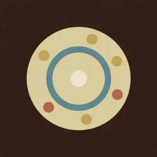

Hands · handpan drill for D Kurd
The ding answers
The right hand walks. The ding answers every note.

- Kind
- Hands
- Tempo
- 72 BPM
- Time signature
- 4/4
- Length
- 4 bars, about 13 seconds
- Notes used
- D3, A3, C4, E4, G4, C5
- Added
- 2026-10-09
Play in AlamutLearn bar by bar
About this pattern
The right hand plays low A, C, E, G, and the high C, then comes back down G, E, C. After every one of those, the left hand plays the ding. The ding is the clock.
Notation
Each line is one bar in 4/4. Numbers are the pan's fields, a dot is a rest, brackets hold notes struck together, and × is a tak on the shoulder. Read the number legend below.
1 0 3 05 0 7 09 0 7 05 0 3 0
Number legend
0D3 (ding), 146.8 Hz1A3, 220.0 Hz2B♭3, 233.1 Hz3C4, 261.6 Hz4D4, 293.7 Hz5E4, 329.6 Hz6F4, 349.2 Hz7G4, 392.0 Hz8A4, 440.0 Hz9C5, 523.3 Hz×tak, a rim or shoulder tap
دینگ جواب میدهد
دست راست قدم میزند. دینگ به هر نت جواب میدهد.
دست راست لای بم، دو، می، سل و دوی بالا را میزند، بعد با سل، می، دو برمیگردد. بعد از هر کدام، دست چپ دینگ را میزند. دینگ ساعت قطعه است.
More Hands
Short hand-alternation drills that teach where the notes sit and which hand reaches them.